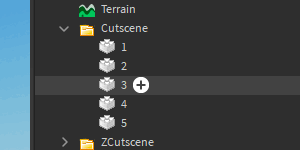
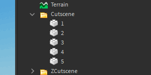
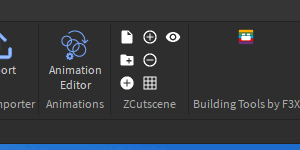

I have tried to make this site as user-friendly as possible for owners of small screen devices such as smartphones and small tablets/laptops.
To open side menu on your device, click left edge of screen.
This is the home page of the ZCutscene plugin wiki. This plugin will help you create amazing scenes and customize them as much as possible. On this page you can find information on:
To navigate faster, use side menu.
That button inserts 2 objects into workspace:
Cutscene folderCutsceneScriptClick on it and put inserted objects in:
Cutscene folder in workspace.CutsceneScript in any of these places: ReplicatedFirstStarterGuiStarterPackStarterCharacterScriptsStarterPlayerScriptsPreparation completed!
Sets current selection as path to cutscene folder. This is necessary for the (3) Create new and (7) Hide/Show buttons to work.
To set folder, select the folder in Explorer and click on this button.
Why does this button exist?
The fact is that this plugin differs from other similar ones in that it can be used to create an unlimited number of cutscenes, so plugin has the ability to set main folder for them.
Creates new camera position, using previous as template. This is the main function, which has several uses.
The first is without selection. It won't work without (2) Set folder. When clicked, it clones the most recent object in the folder and gives it a name based on how many childrens there are in folder.
The second is using selection. It will work without (2) Set folder. To do this, you need to select camera position and click on the button. It clones the selected object and gives it a name that is 1 more than the name of the selected object.

First method requires "purity" in the folder, that is, there should not be any other objects in the folder, except for camera positions.
Both methods teleport just created camera position to your camera and align its position and orientation to the grid, to change this see (6) Change grid size.
Adds "1" to selected object names. Select camera positions and click this button. Anything you selected will increase by 1 in name.
Subtracts "1" from selected object names. Select camera positions and click this button. Anything you selected will decrease by 1 in name.

Grid affects on position and orientation of camera positions. You can change it to:
10.50.10If 0, then grid is disabled.
Hides/shows all camera positions in the cutscene folder.

CutsceneScript is the script required for cutscene to work. CutsceneScript can be obtained using (1) Insert objects button.
Initially, the script is only executed when it is initialized, but you can change this.
Below are some examples of good usage.
First create a RemoteEvent and put it in ReplicatedStorage. Name it StartCutscene.
Next, open CutsceneScript, scroll to the bottom and replace these lines:
wait()
StartCutscene(workspace.Cutscene)With this one:
game.ReplicatedStorage.StartCutscene.OnClientEvent:Connect(function()
StartCutscene(workspace.Cutscene)
end)Next, you need to create a Script and put it wherever you like. I recommend putting it in ServerScriptService. Open script you just created and paste a couple of lines into it:
wait(30)
game.ReplicatedStorage.StartCutscene:FireAllClients(workspace.Cutscene)That's it! Now, after 30 seconds, for every player on the server will start a cutscene.
First create a RemoteEvent and put it in ReplicatedStorage. Name it StartCutscene.
Next, open CutsceneScript, scroll to the bottom and replace these lines:
wait()
StartCutscene(workspace.Cutscene)With this one:
game.ReplicatedStorage.StartCutscene.OnClientEvent:Connect(function()
StartCutscene(workspace.Cutscene)
end)Next, you need to create a Script and put it in the part. Open script you just created and paste this code into it:
Part = script.Parent
Debounce = false
Part.Touched:Connect(function(Hit)
if Hit.Parent:FindFirstChild('Humanoid') and not Debounce then
Debounce = true
local Player = game.Players:GetPlayerFromCharacter(Hit.Parent)
game.ReplicatedStorage.StartCutscene:FireClient(Player, workspace.Cutscene)
wait(30)
Debounce = false
end
end)That's it! Now, after player touches the part, a cutscene will start for him, and for 30 seconds it will not be possible to start cutscene again.
Convert values to Attributes:
local CHS = game:GetService('ChangeHistoryService')
CHS:SetWaypoint('Convert Before')
local Sel = game:GetService('Selection'):Get()
for i, p in pairs(Sel[1]:GetChildren()) do
for _, v in pairs(p:GetChildren()) do
p:SetAttribute(v.Name, v.Value)
v:Destroy()
end
end
CHS:SetWaypoint('Convert After')AutoHotKey and Gdip Lib - for screenshots
Ezgif - for creating gifs from screenshots
Visual Studio Code and Roblox Studio - for coding
Website by Zgoly, Design by Zgoly
Plugin by Zgoly#9942, Script by Zgolyy
Hosted by? No, Github Pages